Recently I watched Filip Hric YT livestream Debugging test flakes in Cypress. Good video. He has shown several examples of flaky tests caused by the bad test design. In this blog post, I will give my take on the solid test design that avoids all shown pitfalls.
- The application
- The loading
- The number of items
- Active subscriptions
- Sample data
- GitHub Copilot trick
- The data edge case
- Control the data
- Response data changes
- See also
🎁 The source code for this blog post is in the public repo bahmutov/cypress-flakiness-debug-examples. I have grabbed the initial code from filiphric/cypress-flakiness-debug-examples branch
customer-subscriptions. The examples in this blog post are using the application and the tests in the subfoldercustomer-subscriptions.
The application
The application displays a list of subscriptions. Some subscriptions are active and some are not.
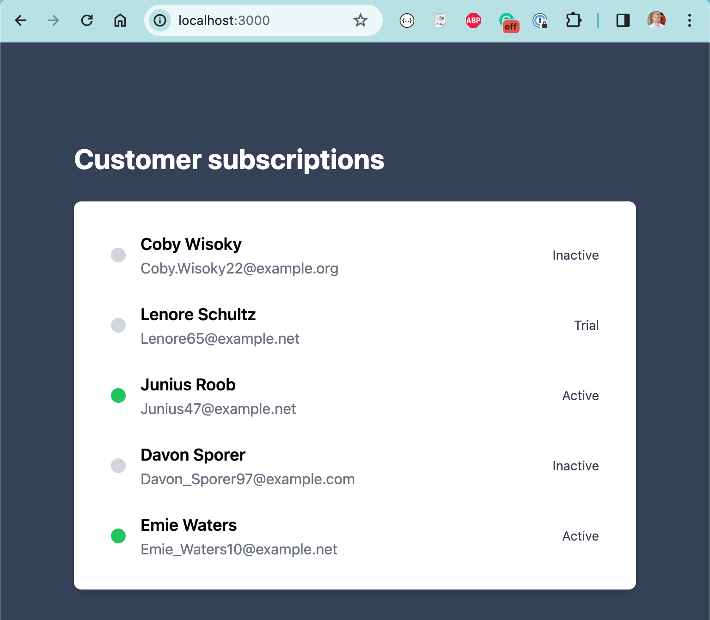
The list is generated dynamically using @faker-js/faker module. The number of items can be from 1 to 6:
1 | import { faker } from '@faker-js/faker' |
There is also a loading "splash" screen before the items load.
1 | useEffect(() => { |
Let's see how Cypress end-to-end tests for this app can be flaky or solid.
The loading
If you just started the application, the webserver might take longer to bundle and return the homepage, especially in the dev mode. To better simulate the unpredictable initial load, I will add a random delay between 1 and 11 seconds to the fetch call.
1 | useEffect(() => { |
Here is the first test as shown by Filip. It is flaky on purpose. Can you see at least two potential problems?
1 | it('Activates a subscription', () => { |
The loading time
The first problem we see when running the test is the command cy.get('[data-cy=customer-item]') failing.
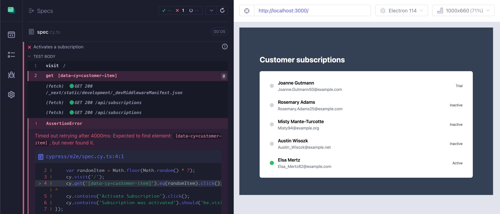
The test runner simply did not "see" the subscriptions list in time. To determine it, click on the failed command GET and look at the restored DOM snapshot: the app was still showing the "Loading" message.
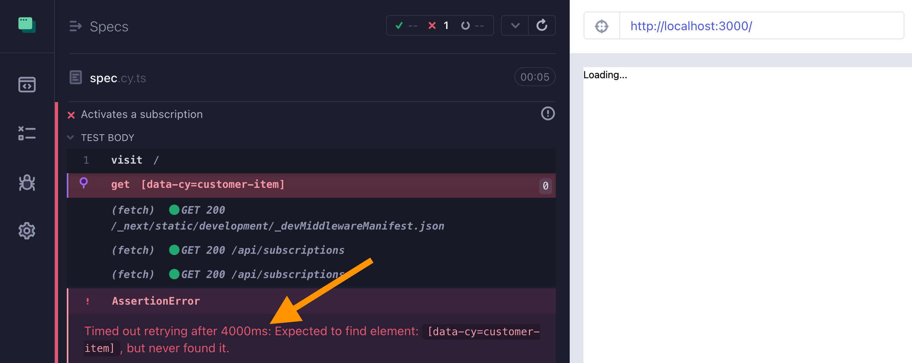
But sometimes the test succeeds. If you inspect the same command GET using the time-traveling debugger, instead of "Loading" you see the items.
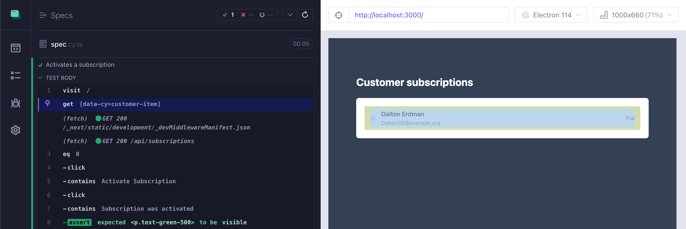
This is test flake: depending on the application's speed the same command step fails or succeeds. We need to take the maximum loading time into the account. The error message "Timed out retrying after 4000ms: Expected to find element: [data-cy=customer-item], but never found it." tells us the solution: we must increase the timeout for the GET command because the application might not show the items until after 11 seconds passed. Let's fix the test:
1 | cy.visit('/') |
The command now retries for 11 seconds instead of the default 4. You can see the slower progress bar.
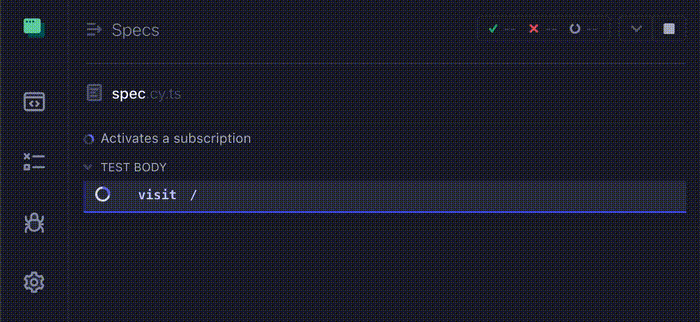
The number of items
Here is the second problem with the test. The application can show between 1 and 6 items. The test picks a random index between 1 and 6. If the test picks an index larger than the random number of items, the test will fail, since there is no such item. We must pick one of the existing items. Filip changed his test to do so:
1 | it('Activates a subscription', () => { |
💡 If you do need to pick a random number between min and max in your Cypress tests, please use the bundled Lodash function _.random:
2
3
4
let randomItem = Math.floor(Math.random() * 7)
// use Cypress._.random function
const randomItem = Cypress._.random(0, 6)
The above test is good. I would also print the picked item index to make it very clear which item we are subscribing to. It certainly removes the flake from trying to pick an item that is not there.
1 | .then((numberOfItems) => { |
Active subscriptions
The test is less flaky than before but occasionally it still fails. Here is a good example of the failing test:
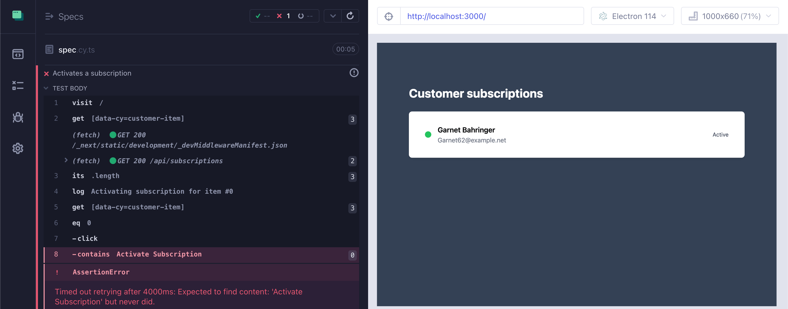
We only have one item, so we pick it to activate the subscription. But the item is already active. We cannot click on it to activate again. When picking an item, we must only consider the items that are "trial" or "inactive".
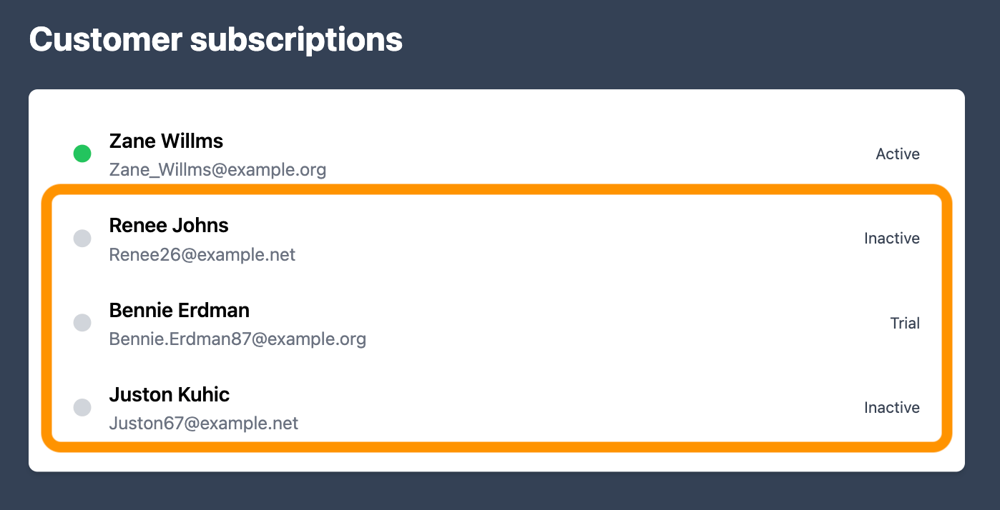
We can look at the HTML markup to see if the "trial" and "inactive" items have any HTML attributes that we can use to easily query them while omitting the "active" subscriptions.
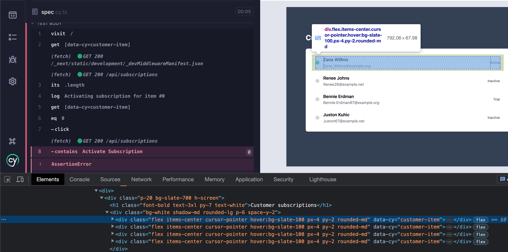
Hmm, nothing. No biggie, we can add data-status attribute to our SubscriptionItem component.
1 | const SubscriptionItem: React.FC<SubscriptionItemProps> = ({ |
Tip: I use separate data- attribute to pass the status following the advice in my blog post Do Not Put Ids Into Test Ids.
Now our test can be very explicit and only consider the "trial" or "inactive" items by using the OR CSS selector.
1 | cy.get( |
We can also go the other way and filter out all active subscriptions using the cy.not command.
1 | cy.get('[data-cy=customer-item]', { timeout: 11_000 }) |
We still have two problems with this test that will cause flake. Do you see them? One is caused by the random data, another by the test design.
Sample data
Here is the problem caused by the test design. In the failure below we see that we are picking the item number one (zero-based index).
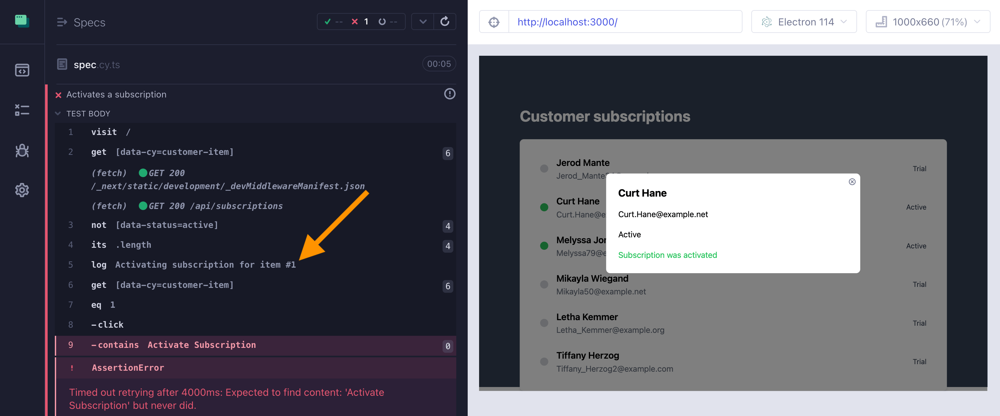
Hmm, let's hover over the items we picked initially using cy.get('[data-cy=customer-item]', { timeout: 11_000 }).not('[data-status=active]') command. Seems we correctly picked 4 subscriptions.
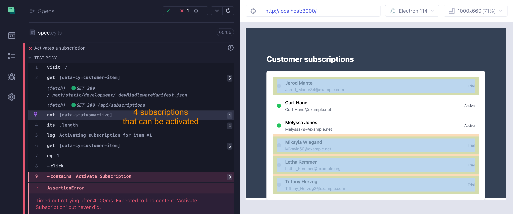
Now hover over the EQ 1 command. Why it picking the already activated subscription that is NOT part of the original four items?
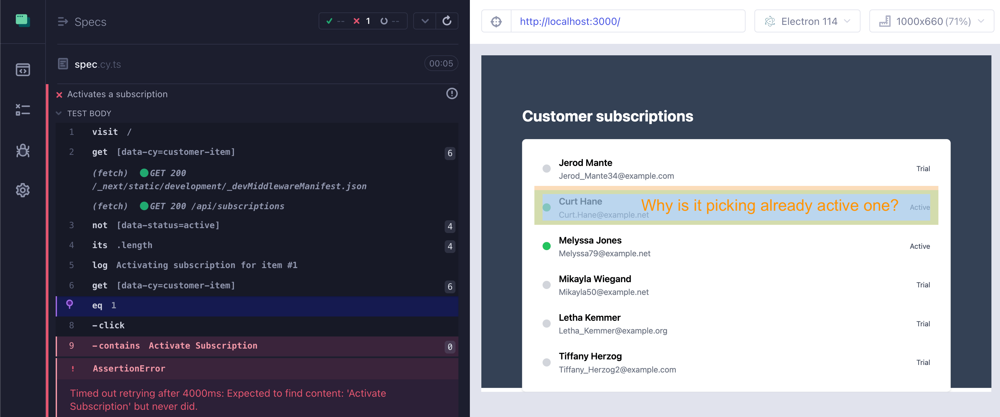
Ohhh, we picked the "trial" or "inactive" subscriptions initially to pick the random item index. But then we applied this index to all items
1 | cy.get('[data-cy=customer-item]', { timeout: 11_000 }) |
Let's fix it. Just apply the same logic to filter items.
1 | it('Activates a subscription', () => { |
The test works pretty well. But we can express our test even simpler by using my cypress-map plugin. Like Lodash, the cypress-map provides a lot of "missing" queries and commands that make Cypress tests much simpler and stable. In our case, we need something like Lodash's _.sample function.
1 | _.sample([1, 2, 3, 4]); |
1 | // https://github.com/bahmutov/cypress-map |
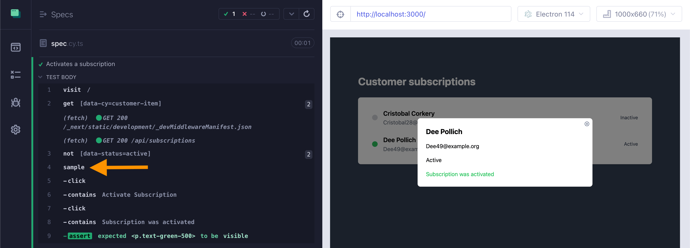
Boom. Simple and solid. Almost.
GitHub Copilot trick
Here my #1 tip for you when writing Cypress tests. I have stated it many many years ago at a few conference presentations. When writing Cypress tests, write first "directions" to a human user. For example:
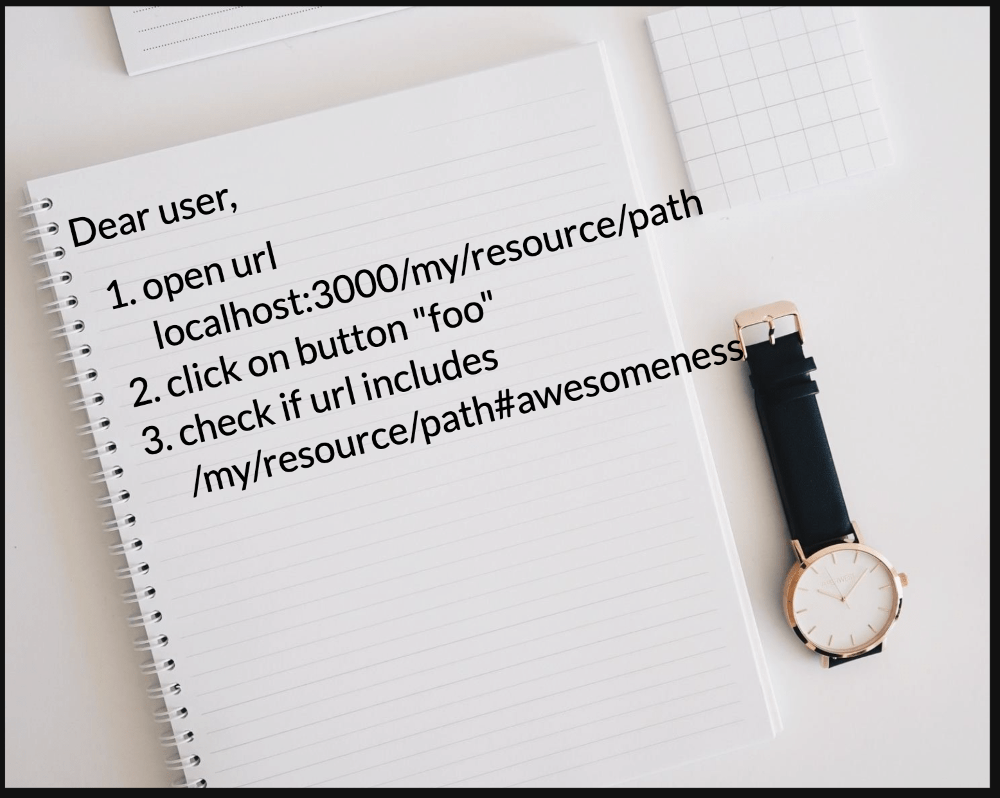
Write the steps as comments, telling the tester what to do, but not how to do it. Here are the steps I wrote as comments inside an empty Cypress test
1 | // https://github.com/bahmutov/cypress-map |
Now add an empty line in your VSCode and it should trigger GitHub Copilot. Here is what happens for me:
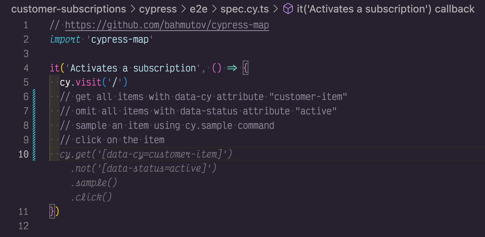
Nice! Our comments got "translated" into correct Cypress code that even uses the custom cy.sample command from cypress-map. Click "Tab" to accept the suggested code, and we have a passing test.
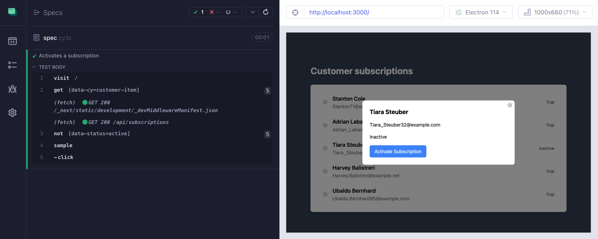
Let's continue generating our test. Write more user instructions.
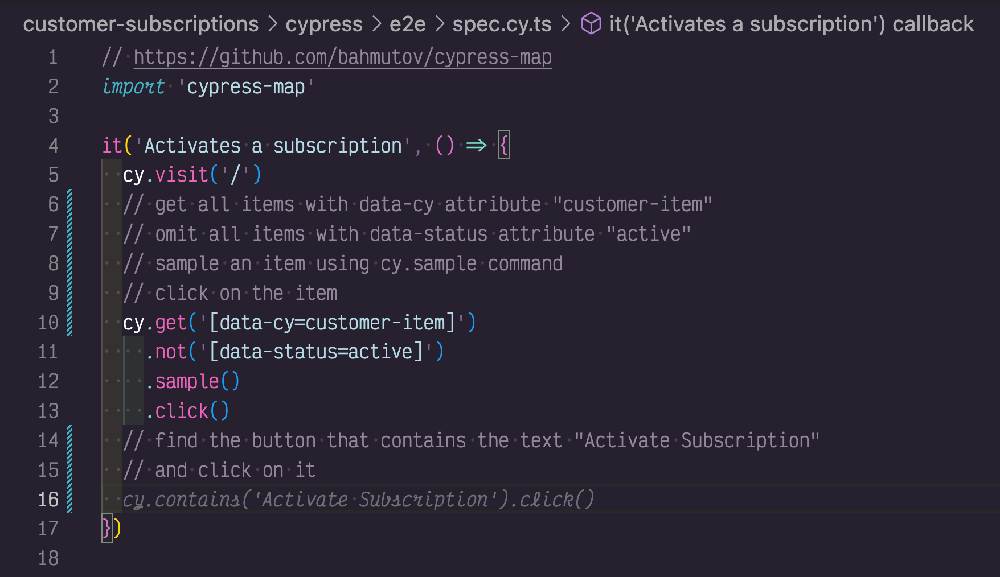
Then we need to confirm the subscription was activated.
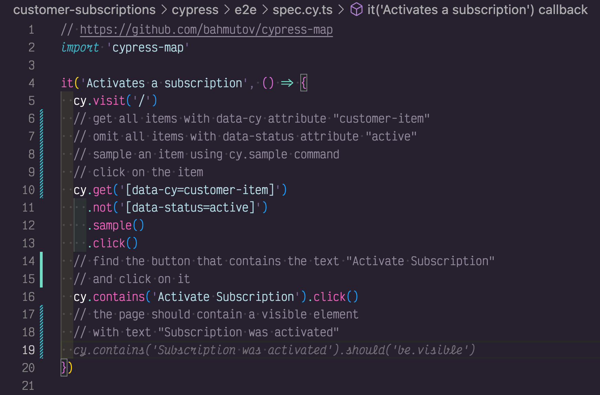
The test is complete.
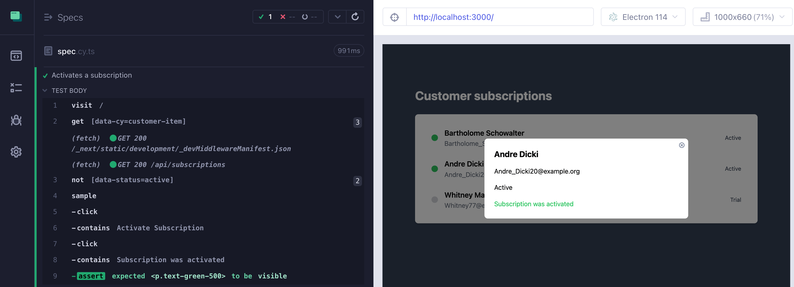
Not bad, right?
The data edge case
Yet, there is one more source of test flake that we did not consider. Sometimes the test fails.
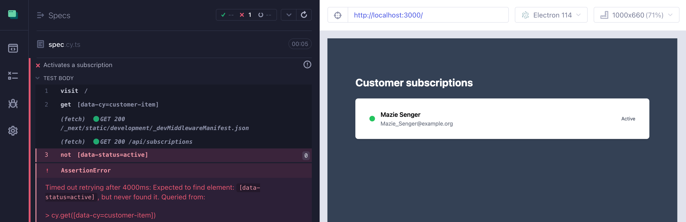
Again, by inspecting the Command Log column, you can see the problem. The test did find items. The test failed to find non-active items, because there all randomly generated subscriptions were "active" already. Our test always assumed there will be some inactive subscriptions, but that is an invalid assumption. We can do conditional testing in Cypress, even if it is an anti-pattern. The simplest way to run testing command only if there are items to be activated is by using my cypress-if plugin.
1 | // https://github.com/bahmutov/cypress-map |
If the NOT [data-status=active] command yields no elements, we take the ELSE branch where we simply print the info message.
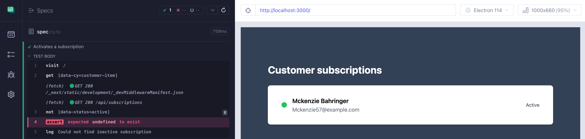
Control the data
Finally, let's confirm that our code works no matter what the backend sends us. We need to control the data, and the best way is to use cy.intercept command to stub the loading network call. We can use fixtures of different types: no inactive subscription, one item, a mixture of items to make sure our testing code can handle each possible situation. We can copy the starting response data straight from the browser.
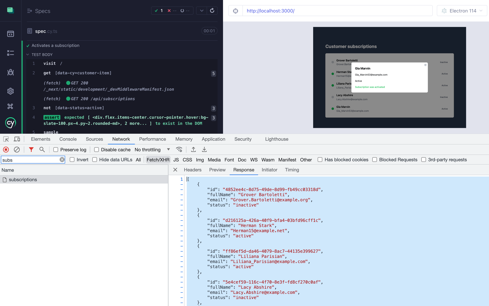
The first JSON fixture will have a mixture of items, with "active" items first. This will test the case we discussed in the "Sample data" section above. The index of the inactive item should not accidentally apply to all items.
1 | [ |
Our next fixture will have just an active subscription to test the "ELSE" logic.
1 | [ |
Finally, we want to make sure we test the "trial" items and that they can be activated
1 | [ |
Let's write the tests. We can refactor the code to avoid the duplication.
1 | // https://github.com/bahmutov/cypress-map |
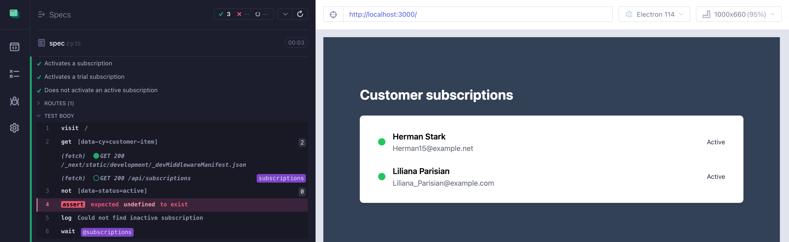
Response data changes
When using a network stub there is a danger that the server changes its response and our tests don't catch it. We can prevent this by adding a quick API test or a spy E2E test. Since we only want to ensure the properties / types of the objects in the response, I recommend using my cy-spok plugin.
API test
In this test we will make a network call ourselves using the cy.request command and will validate the response. The response should be an array, and we can validate the first object using the built-in assertions plus spok property predicates.
1 | import spok from 'cy-spok' |
There is no web page in this test, since we never called cy.visit. Instead we simply see the assertions in the Command Log.
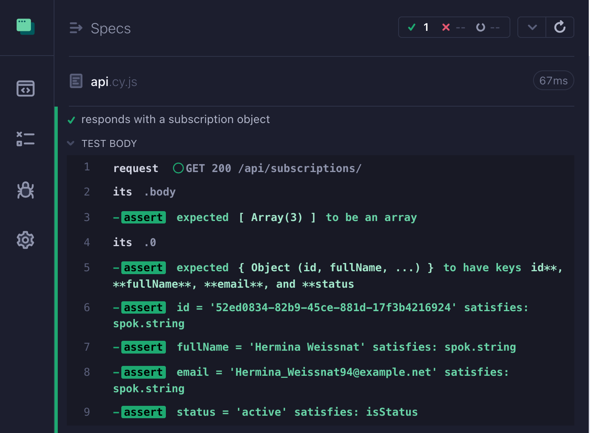
Network spy test
Sometimes it is hard to make a valid request from the test: the format of the call might be complicated, plus require authentication. It might be easier to just spy on the call made by the application. The same logic applies.
1 | import spok from 'cy-spok' |
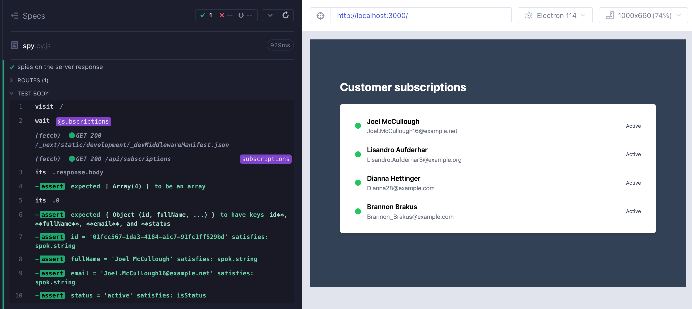
Beautiful.
🎓 In this blog post I used a lot of Cypress plugins. If you want to learn them better, I have an online hands-on course Cypress Plugins. You can also level up your network testing by taking my Cypress Network Testing Exercises course.